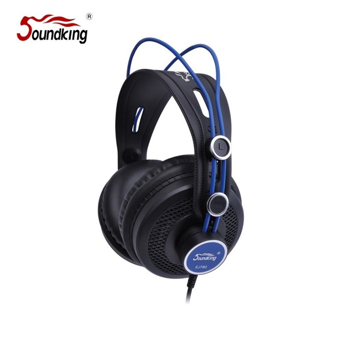

EJ780은 53mm 대형 다이나믹 드라이버와 60Ω 임피던스를 채택한 클로우져형 모니터링 헤드폰입니다. 18Hz–25kHz의 넓은 주파수 응답과 600mW 최대 입력 파워로 전자드럼 모니터링·홈 스튜디오 녹음·일반 감상용 등 다양한 용도로 활용됩니다.

53mm 드라이버 · 60Ω 임피던스 · 18Hz–25kHz 광대역의 클로우져 모니터링 헤드폰. 전자드럼·스튜디오 녹음에 최적화되어 있습니다.
EJ780은 53mm 대형 다이나믹 트랜스듀서를 탑재한 클로우져(밀폐형) 헤드폰입니다. 클로우져 구조는 외부 소음을 차단하고 드라이버 후면으로의 음 누출을 막아, 마이크 수음 환경이나 주변 소음이 많은 연습실에서도 깨끗한 모니터링을 가능하게 합니다.
60Ω의 임피던스는 일반 스마트폰·노트북의 헤드폰 출력으로도 충분히 구동 가능하면서, 프로 오디오 인터페이스에서는 더욱 풍부한 저역과 해상도를 끌어낼 수 있는 절충적인 값입니다. 18Hz–25kHz의 광대역 주파수 응답과 600mW 최대 파워로 전자드럼 SD220/SD200의 모니터링 용도로 권장됩니다.
| 모델명 | EJ780 |
|---|---|
| 타입 | Closed-Back Dynamic Headphones |
| Transducer | Dynamic · 53 mm |
| Impedance | 60 Ω |
| Sensitivity | 93 ± 3 dB |
| Frequency Response | 18 Hz – 25 kHz |
| Max Power | 600 mW |
| 권장소비자가 | 70,400 원 / 개 (VAT 포함) |
※ 본 사양 · 단가는 수입원(현대에이브이씨) 2026-01-01 전자드럼·스탠드 제품 가격표 기준입니다.